Materialize
Materialize adalah framework atau kerangka kerja yang dibuat dan dikembangkan oleh Google. Materalize ini mengusung tema Material Design, dimana menyatukan prinsip dasar untuk membuat desain yang sukses dengan inovasi dan teknologi. Tujuannya untuk mengembangkan sistem desain yang memungkinkan user experience yang sama di semua perangkat.
Materialize dan Bootstrap tidak memiliki banyak perbedaan. Yang paling signifikan adalah dari sisi desain. Jika dilihat dari sisi pemakaian, tidak akan jauh berbeda. Jadi, jika sudah paham dengan Bootstrap, maka akan paham ketika menggunakan Materalize.
Prinsip Desain
- Material is the metaphor
- Bold, graphic, intentional
- Motion provides meaning
Untuk lebih detail bisa klik link ini
Materialize Source Code
Setali tiga uang dengan Bootstrap, berikut ini adalah struktur folder Materialize:
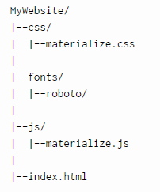Beberapa Komponen pada Materialize:
- Navbar
- Card
- Button 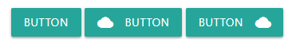


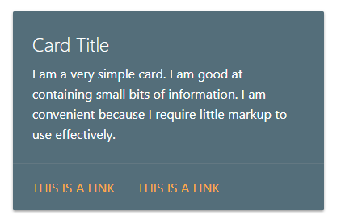
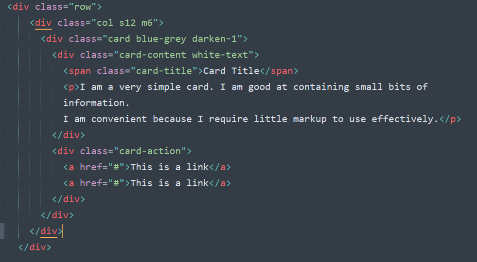
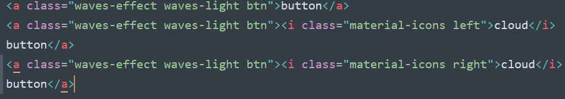
Form
Form pada Materialize agak sedikit berbeda dan terlihat seperti ini:
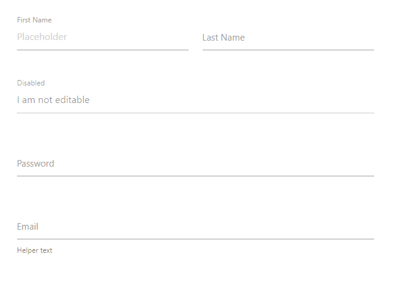Referensi
Dokumentasi lengkap bisa dilihat di web resmi Materialize, berikut linknyahttps://materializecss.com/
Instalasi Materialize
Sebelum kita menggunakan Materialize. Berikut adalah langkah-langkah installasinya:
- Download file Materialize dari sini: Materialize
- Buat folder dengan nama ITW_SHIFT_NRP (Contoh: ITW_KAMIS10_163040025) 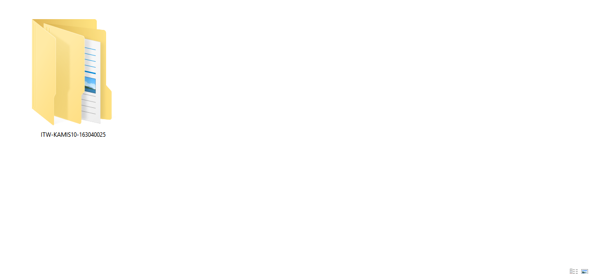
- Ekstrak file tersebut, lalu copykan isi folder "materialize" kedalam folder ITW_SHIFT_NRP (Contoh: ITW_KAMIS10_163040025) 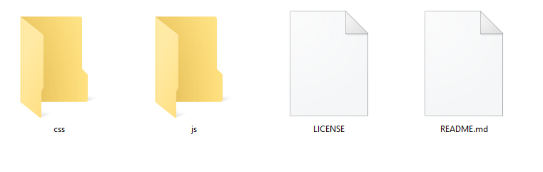
Latihan
- Buat file baru dengan nama cobamaterialize.html di dalam folder ITW_SHIFT_NRP (Contoh: ITW_KAMIS10_163040025)
- Copykan source code ini: Source Code
- Lalu didalam tag body ketikkan Source Code dibawah ini: 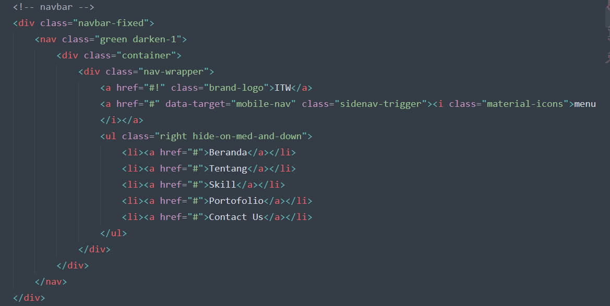
- Dibawahnya lanjutkan dengan mengetikkan ini: 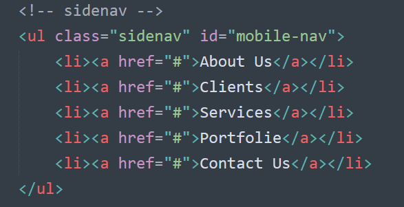
- Kemudian ini: 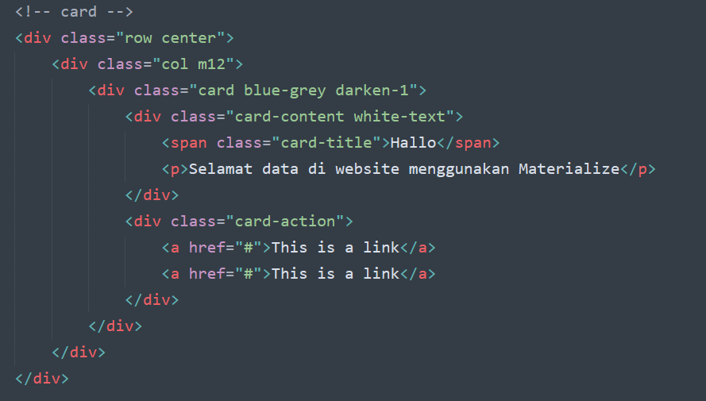
- Terakhir, dibawah dokumen kalian ketikkan ini: 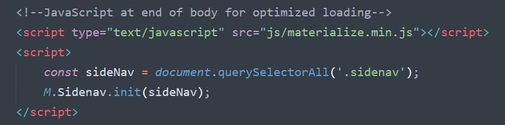
- Hasilnya harus seperti ini: 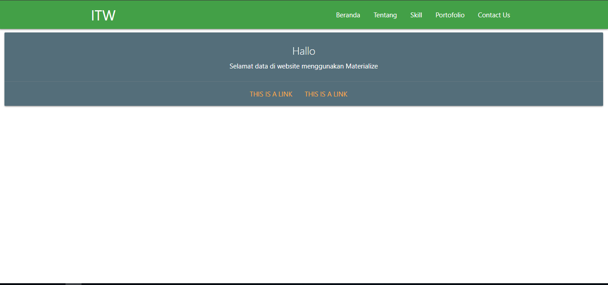
Tugas 7 - Membuat website dengan Materialize
perhatikan dan ikuti video berikut.
1. Membuat Website Company Profile (Part 1)
2. Membuat Website Company Profile (Part 2)